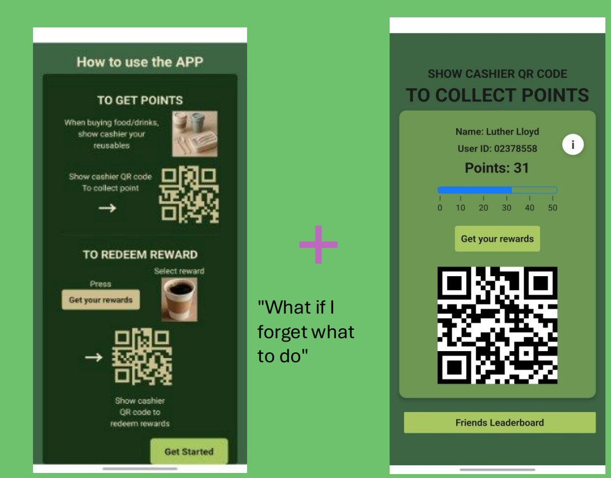
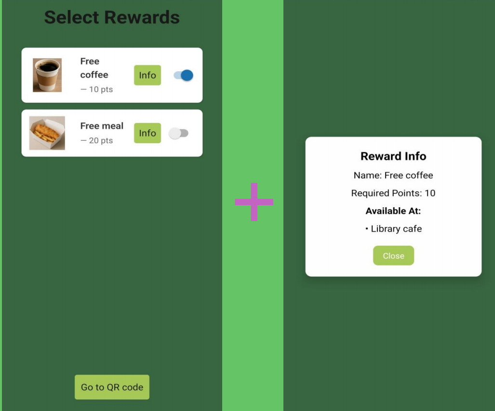
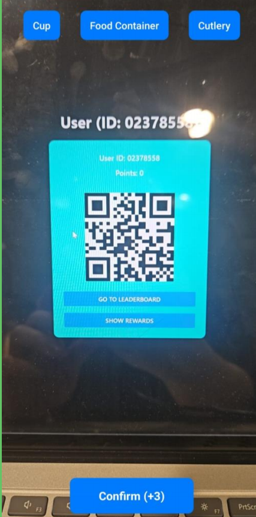

Overview
Re@Imperial is a sustainability-focused mobile platform built around a simple idea: reward reuse. The system lets users earn points when they bring reusable items to campus food outlets, then redeem those points for rewards through a structured student, cashier, and admin flow.
Core concept: reduce disposable waste by making environmentally responsible behaviour visible, trackable, and rewarding.
The Problem
The presentation identified a clear behavioural gap: many students continued using single-use containers because reuse felt less convenient, there was little incentive, and the disposal process was often poorly understood. The project reframed that challenge as a motivation and interaction problem, asking how students and staff could be encouraged to reduce disposable waste at Imperial.
Core Functionality
User QR Workflow
Each user has a personal QR code page used to collect points after showing reusable items at participating outlets.
Rewards & Redemption
Users can browse available rewards, toggle selections, and redeem points in a way that is clearer and less intrusive than earlier iterations.
Cashier Scanner
Cashiers can scan codes and process point updates more efficiently, with later iterations simplifying confirmation steps and enabling manual point editing when needed.
Leaderboard & Social Motivation
The app also includes a friends leaderboard to make reuse more engaging and socially visible rather than purely transactional.
Technical Highlights
Cross-Platform Frontend
The app was built with React Native and Expo, enabling cross-platform development, rapid prototyping, and fast iteration through hot reloading during testing.
Backend & Database
We used Supabase (PostgreSQL) as an integrated backend and database solution, which simplified data management and provided automatic API generation for core application features.
Role-Based Architecture
The system was designed around three roles: students, cashiers, and admins. Student flows handled rewards, friends, profile information, and points; cashier flows processed QR-based point collection and redemption via expo-camera; and admin flows supported management of users and rewards.
CI/CD
We also incorporated GitHub Actions into the development workflow to support continuous integration and deployment.
Impact
The projected user impact presented for the concept was substantial: the system could reduce waste by up to 72 tonnes annually and potentially save Imperial up to £568,025 per year, while also making sustainable behaviour feel more rewarding and more socially engaging.
Design lesson: one of the strongest aspects of this project was iterative refinement based on direct feedback from both students and cashiers.
Future Work
The team identified several natural next steps: integrating with current Imperial cashier systems, expanding reward partnerships with Taste Imperial, and growing adoption across campus.
Tech Stack
Screenshots
These images highlight the visual identity of the platform and the key user-facing and cashier-facing flows.

Homepage + User Page
A combined horizontal view showing the onboarding guidance alongside the main user page, making the points collection flow easier to understand at a glance.

Reward Redemption
The reward interface supports browsing, selection, and redemption while also communicating reward details more clearly.

Cashier Scanner
The cashier-facing tool supports point collection and redemption, with iterations focused on reducing friction and improving operational control.